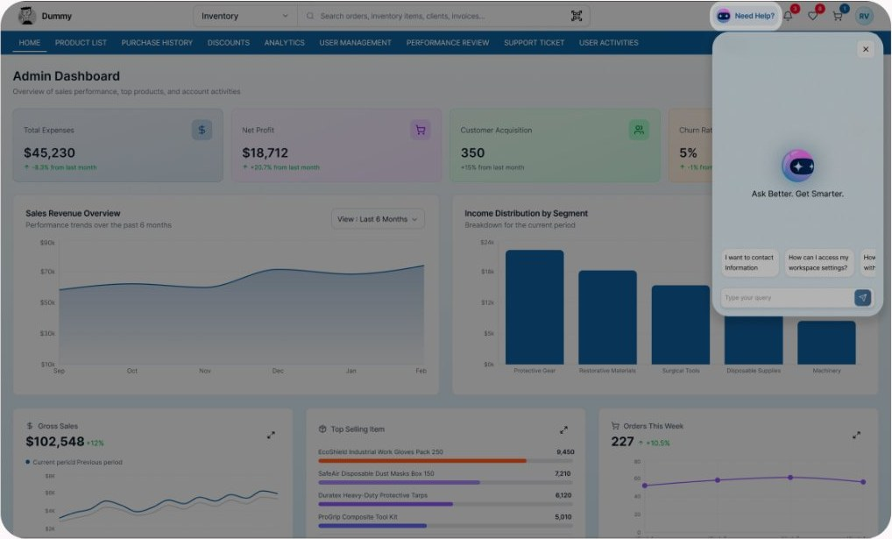
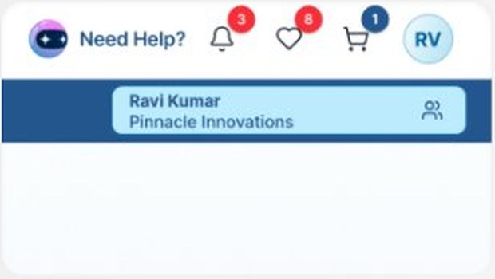
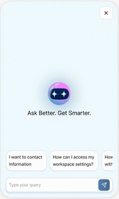
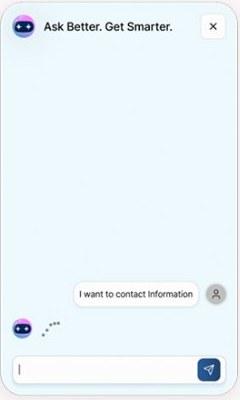
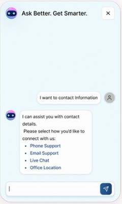
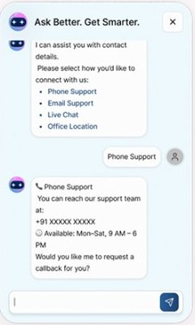

Too many clicks
Simple tasks sit behind nested menus.
NDI (Nashville Dental Inc.) runs a procurement dashboard for dental products, equipment and related services. I designed a conversational assistant that lives inside it, so users can ask instead of navigating.
Watch the prototype
The dashboard brings product browsing, purchase history, discounts, analytics, user management, performance reviews, support tickets and user activity into one place. Products span categories like protective gear, restorative materials, surgical tools, disposable supplies and machinery, alongside equipment and technology, installation, maintenance and related services.
That breadth is useful, but it means people often have to dig through menus to find one answer.
Four issues the design set out to address.
Simple tasks sit behind nested menus.
Deep information architecture adds mental effort and makes people give up on tasks.
Useful capabilities go unused because they are buried in settings.
Less experienced users raise tickets for simple lookups.
Design question
Lower the mental effort of finding information and running queries.
Speed up routine tasks by removing friction points in the UI.
Turn multi-step procedures into a short conversation.
Surface deep features through suggested prompts.
The core journey shown in the prototype.
Persistent button in the global header, or ⌘ + K
Welcome state with suggested prompts and a query field
Choose a suggested prompt or type a question
Typing indicator, then an answer with selectable options
Follow-up answer and next action, without leaving the page
A support system that feels like part of the workflow, not a place users have to go.

Anchoring help in the header treats support as a core part of the product, not an afterthought. It sits where people already expect utility and account actions: next to notifications, wishlist, cart and profile.

Reachable from every screen through the top navigation.
Designed to respond to the module the user is viewing.
Opens beside the data rather than replacing it.
One click or ⌘ + K opens the panel.
Each state was designed so users always know what is happening and what they can do next.

Brand mark, a clear promise and scrollable prompt chips so users never face an empty box.

The question echoes instantly and a typing indicator shows the assistant is working.

Answers end in tappable options, so the next step is a click rather than more typing.

A specific answer with a follow-up offer keeps the conversation moving toward a result.
Dashboard UI, chat panel components and the clickable prototype.
Fast exploration of layouts and interaction ideas.
Drafting and refining conversation copy and suggested prompts.
Product cards inside replies, so users can find and compare items without leaving the conversation.
Booking installation and maintenance directly from the assistant.
No-answer, error and hand-off-to-a-person states.
Testing with procurement users to validate the flow and measure time saved.
“AI isn't about chat. It's about making complexity feel simple.”